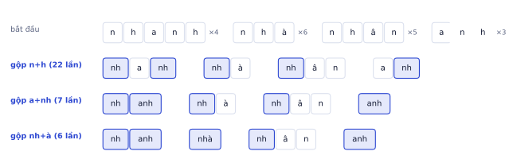
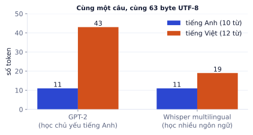
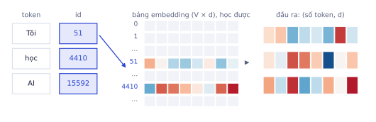
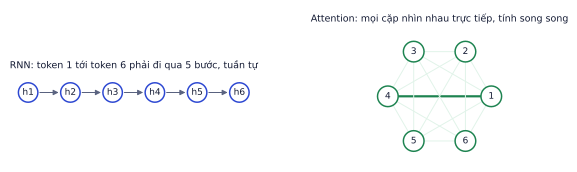

Trước khi model đọc được văn bản, văn bản phải thành số. Bài này đi qua hai bước đầu tiên của mọi LLM: tokenization (cắt văn bản thành các mảnh có id) và embedding (biến mỗi id thành một vector có nghĩa). Bạn sẽ thấy bằng số đo thật vì sao tiếng Việt thường tốn nhiều token hơn tiếng Anh, và vì sao các mô hình cũ như RNN nhường chỗ cho Transformer.
Token là gì
Vì sao cần học
Mọi thứ về LLM đều tính bằng token: giá API (đồng trên một triệu token), giới hạn context (128K token), tốc độ (token mỗi giây). Hiểu token là hiểu chi phí và giới hạn của sản phẩm bạn xây.
Model không đọc chữ cái hay từ, mà đọc token: các mảnh văn bản lấy từ một bộ từ vựng cố định (thường 32.000 đến 200.000 mảnh). Mỗi token có một id số nguyên.
chuỗi rất dài, model phải tự học ghép chữ thành từ
Từ
unhappiness (1 token)
chuỗi ngắn
từ vựng khổng lồ; từ mới, tên riêng, lỗi chính tả là "không biết"
Subword
un, happiness (2 token)
cân bằng: từ phổ biến là 1 token, từ hiếm ghép từ mảnh nhỏ
phụ thuộc dữ liệu dùng để học tokenizer
Mọi LLM hiện nay dùng subword. Khoảng trắng thường dính vào token đi sau (" học", " AI"), nên "AI" ở đầu câu và " AI" giữa câu có thể là hai token khác nhau.
Byte Pair Encoding (BPE)
Vì sao cần học
BPE là thuật toán tạo bộ từ vựng cho GPT, LLaMA, Qwen và hầu hết LLM. Tự cài BPE (phần thực hành) là cách tốt nhất để hiểu vì sao tokenizer cắt chữ như vậy.
Thuật toán
BPE học bộ từ vựng từ dữ liệu bằng cách gộp dần cặp mảnh hay đi cùng nhau nhất:
1. Bắt đầu: mỗi ký tự (hoặc byte) là một token
2. Đếm mọi cặp token liền kề trong toàn bộ dữ liệu (nhân với tần suất của từ)
3. Gộp cặp phổ biến nhất thành token mới, thêm vào từ vựng, ghi lại quy tắc gộp
4. Lặp lại tới khi đủ kích thước từ vựng mong muốn
Ví dụ từng bước
Kho dữ liệu nhỏ gồm bốn từ với tần suất: "nhanh" ×4, "nhà" ×6, "nhân" ×5, "anh" ×3.
Lượt 1. Đếm cặp: (n, h) xuất hiện 2 lần trong "nhanh" (×4) + 1 lần trong "nhà" (×6) + 1 lần trong "nhân" (×5) + 1 lần trong "anh" (×3) = 8 + 6 + 5 + 3 = 22, nhiều nhất. Gộp thành "nh".
Lượt 2. Cặp (a, nh) xuất hiện trong "nh·a·nh" (×4) và "a·nh" (×3) = 7. Gộp thành "anh".
Lượt 3. Cặp (nh, à) = 6. Gộp thành "nhà".

Ba lượt gộp đầu tiên. Sau lượt 3, "nhà" và "anh" đã là một token; "nhanh" là hai token "nh" + "anh".
Khi mã hóa văn bản mới, tokenizer áp dụng đúng các quy tắc gộp theo thứ tự đã học. Từ chưa từng thấy như "nhanh nhảu" vẫn cắt được thành các mảnh đã biết.
Byte-level BPE
GPT-2 trở đi dùng byte-level BPE: bắt đầu từ 256 byte thay vì ký tự. Mọi văn bản (emoji, tiếng Việt có dấu, mã nguồn) đều là chuỗi byte, nên không bao giờ gặp token "không biết". Cái giá: ký tự ngoài bảng mã ASCII cần 2–4 byte, và nếu tokenizer chưa học gộp các byte đó thì một chữ bị cắt thành nhiều token.
Đào sâu thêm
Các biến thể.WordPiece (BERT, PhoBERT dùng biến thể BPE) chọn cặp gộp theo xác suất thay vì tần suất. SentencePiece/Unigram (T5, LLaMA 1–2) coi khoảng trắng là một ký tự bình thường và học từ vựng bằng cách bỏ dần các mảnh ít hữu ích. Khác nhau về chi tiết, cùng một ý tưởng: từ phổ biến thành một mảnh, từ hiếm ghép từ nhiều mảnh.
Vì sao tiếng Việt tốn token hơn
Vì sao cần học
Nếu sản phẩm của bạn phục vụ người Việt, chi phí API, tốc độ phản hồi và lượng tài liệu nhét được vào context đều phụ thuộc vào tokenizer xử lý tiếng Việt tốt đến đâu.
Bộ từ vựng được học chủ yếu từ dữ liệu tiếng Anh, nên từ tiếng Anh thường gọn trong một token. Chữ tiếng Việt có dấu được mã hóa UTF-8 thành 2–3 byte ("ư" là 2 byte, "ờ" là 3 byte), và nếu các tổ hợp đó hiếm trong dữ liệu học tokenizer thì chúng bị cắt vụn.
Ví dụ từng bước
Đo thật với hai tokenizer có sẵn bộ từ vựng công khai:
Câu
Số từ
Byte UTF-8
GPT-2
Whisper multilingual
"I am learning artificial intelligence to become an AI engineer."
10
63
11
11
"Tôi đang học trí tuệ nhân tạo để làm kỹ sư AI."
12
63
43
19
Với GPT-2 (học gần như chỉ trên tiếng Anh), chữ "người" bị cắt thành 7 token: "ng" rồi từng byte lẻ. Với tokenizer được học trên nhiều ngôn ngữ, "người" chỉ còn 2 token, và cả câu tốn khoảng 1.7 lần tiếng Anh thay vì gần 4 lần.

Cùng nội dung, cùng số byte. Tokenizer học trên nhiều ngôn ngữ giảm mạnh số token tiếng Việt, nhưng vẫn nhiều hơn tiếng Anh.
Hệ quả thực tế:
Cùng một nội dung, tiếng Việt thường tốn nhiều token hơn: chi phí API cao hơn, context window chứa được ít chữ hơn, sinh câu trả lời chậm hơn (model sinh từng token).
Các model mới (GPT-4o, Qwen2.5, Gemma) có từ vựng lớn hơn và học trên nhiều ngôn ngữ hơn nên tiếng Việt đỡ tốn hơn nhiều, nhưng chênh lệch vẫn còn.
Luôn đo số token thực tế bằng tokenizer của đúng model bạn dùng, đừng ước lượng theo số từ.
# Cần mạng: tải tokenizer từ Hugging Face (chạy trên Colab)fromtransformersimportAutoTokenizertok=AutoTokenizer.from_pretrained("Qwen/Qwen2.5-0.5B-Instruct")ids=tok("Tôi đang học trí tuệ nhân tạo.")["input_ids"]len(ids),tok.convert_ids_to_tokens(ids)
Không chạy trên trangCần mạng: tải tokenizer từ Hugging Face (chạy trên Colab)Mở trên Colab ↗
Lỗi hay gặp
Ước lượng chi phí bằng số từ. Quy tắc "1 token ≈ 0.75 từ" chỉ đúng với tiếng Anh. Một hệ thống chatbot tiếng Việt ước lượng theo quy tắc đó có thể đánh giá thấp chi phí 2–4 lần. Lấy 100 tin nhắn thật, đếm token bằng tokenizer thật, rồi mới tính.
Tự kiểm tra nhanh
Một API tính 3 USD cho mỗi triệu token đầu vào. Mỗi ngày có 20.000 câu hỏi, mỗi câu trung bình 150 token tiếng Anh. Với tiếng Việt, giả sử số token gấp 1.7 lần.
Embedding
Vì sao cần học
Id của token chỉ là số thứ tự, không mang nghĩa: token 4410 không "gần" token 4411. Embedding biến mỗi id thành một vector, và sau khi train, vị trí của vector mang nghĩa. Đây cũng là nền tảng của tìm kiếm ngữ nghĩa và RAG ở P4.
Bảng tra
Mỗi token id được tra trong một bảng embedding shape (V, d), V là kích thước từ vựng, d là số chiều, để lấy một vector d chiều. Về toán, đó là nhân one-hot của id với bảng; về cài đặt, chỉ là lấy hàng thứ id.

Mỗi id lấy ra một hàng của bảng embedding. Câu 3 token thành ma trận (3, d).
Bảng này là tham số, khởi tạo ngẫu nhiên và được học cùng model bằng backprop như mọi trọng số khác.
Ví dụ từng bước
Qwen2.5-0.5B có từ vựng 151.936 token và d = 896. Bảng embedding có 151.936 × 896 ≈ 136 triệu tham số: hơn một phần tư toàn bộ model 0.5 tỉ tham số. Ở bf16 (2 byte mỗi số) bảng này chiếm khoảng 272 MB. Từ vựng lớn giúp tiếng Việt tốn ít token hơn, nhưng đổi lại bảng embedding và lớp đầu ra (cũng có shape V × d) rất nặng.
Embedding mang nghĩa
Sau khi train, token có nghĩa gần nhau có vector gần nhau theo cosine similarity (P0.5): "vua" gần "hoàng hậu", "Hà Nội" gần "Hải Phòng". Hướng trong không gian cũng mang nghĩa: nổi tiếng từ word2vec là vector("vua") − vector("đàn ông") + vector("phụ nữ") ≈ vector("hoàng hậu").
Embedding cấp câu
Embedding token chỉ biểu diễn từng mảnh. Để so sánh cả câu (tìm tài liệu liên quan tới câu hỏi), ta đưa câu qua một model (thường là encoder như BERT, bge-m3) rồi gộp các vector token lại, ví dụ lấy trung bình hoặc lấy vector của token đặc biệt đầu câu. Model embedding câu được train riêng để câu cùng nghĩa có cosine cao. Đây là công cụ chính của P4.2 (RAG).
Ghi nhớ: tokenizer và embedding là một cặp. Đổi tokenizer thì id thay đổi, toàn bộ bảng embedding và model phải train lại.
Lỗi hay gặp
Dùng nhầm tokenizer. Tải model từ một nơi và tokenizer từ nơi khác (hoặc phiên bản khác) thì id lệch: model nhận "rác" mà không báo lỗi gì, chỉ cho ra câu trả lời vô nghĩa. Luôn tải tokenizer và model từ cùng một tên model.
Giới hạn của RNN và LSTM
Vì sao cần học
Hiểu vì sao RNN thất bại là hiểu vì sao Transformer được thiết kế như vậy. Hai vấn đề của RNN chính là hai thứ attention giải quyết.
RNN đọc từng token một
Trước Transformer, văn bản được xử lý bằng RNN: đọc từng token theo thứ tự, cập nhật một trạng thái ẩn h mang "trí nhớ" về những gì đã đọc:
hₜ = tanh(W·hₜ₋₁ + U·xₜ + b)
Toàn bộ câu phải được nén vào một vector h cố định kích thước.
Hai vấn đề lớn
Vanishing gradient theo thời gian: thông tin từ token đầu phải đi qua hàng trăm phép nhân với W (và qua tanh) mới tới token cuối. Giống mạng sâu không có kết nối tắt (P2.3), gradient tắt dần, nên RNN khó nhớ quan hệ xa ("Con mèo mà hôm qua tôi thấy ở chợ … nó …").
Không song song được: muốn tính hₜ phải có hₜ₋₁. Chuỗi 1.000 token cần 1.000 bước tuần tự, không tận dụng được hàng nghìn nhân của GPU.
LSTM và GRU thêm các "cổng" học được quyết định giữ hay quên thông tin, giảm bớt vấn đề 1 (cổng quên hoạt động như một kết nối tắt theo thời gian), nhưng không giải quyết vấn đề 2.

RNN: thông tin đi tuần tự qua từng bước. Attention: token 1 và token 4 nối trực tiếp, mọi cặp tính cùng lúc.
Attention giải quyết cả hai
Attention (P3.2) cho mỗi token nhìn thẳng vào mọi token khác trong một bước: đường đi giữa hai token bất kỳ dài 1 thay vì dài bằng khoảng cách giữa chúng. Và mọi vị trí tính cùng lúc bằng phép nhân ma trận. Cái giá: chi phí tăng theo bình phương độ dài chuỗi, một chủ đề bạn sẽ gặp lại ở P9.3.
Tự kiểm tra nhanh
Một RNN có mỗi bước nhân gradient với 0.9 (giả sử không đổi).
Tóm tắt bài và thuật ngữ
Bước
Đầu vào
Đầu ra
Ghi nhớ
Tokenizer
văn bản
danh sách id
subword (BPE), đo bằng tokenizer thật
Embedding
id, shape (N, T)
vector, shape (N, T, d)
bảng (V, d) học được
Mô hình chuỗi
vector
biểu diễn theo ngữ cảnh
RNN tuần tự, attention song song
Thuật ngữ
Nghĩa
token
mảnh văn bản trong bộ từ vựng
vocabulary (V)
bộ từ vựng, tập mọi token
tokenizer
công cụ cắt văn bản thành token và ngược lại
subword
mảnh nhỏ hơn từ
BPE
thuật toán gộp dần cặp phổ biến nhất
byte-level
bắt đầu từ 256 byte, không có token lạ
merge rule
quy tắc gộp học được, áp dụng theo thứ tự
embedding
vector biểu diễn token (hoặc câu)
embedding dimension (d)
số chiều của vector
context window
số token tối đa model xử lý một lần
RNN / LSTM / GRU
mạng hồi quy đọc tuần tự / có cổng
hidden state
trạng thái ẩn mang thông tin đã đọc
Ô tự chấm đã giải đúng0 / 7
Bài 1
Đếm cặp trong BPE
tính tay
Dữ liệu (từ và số lần xuất hiện), đã tách thành ký tự:
Từ
Số lần
l o w
5
l o w e r
2
n e w e s t
6
w i d e s t
3
Lời giải
(e, s) xuất hiện trong "newest" (6) và "widest" (3): 9. (l, o) trong "low" và "lower": 7. (w, e) trong "lower" và "newest": 8. Gộp "es" (hoặc "st", cũng 9) trước. Sau đó cặp (es, t) có 9 lần, nên bước sau sẽ tạo token "est".
Bài 2
Kích thước bảng embedding
tính tay
Từ vựng 50.000 token, d = 768.
Lời giải
50.000 × 768 = 38,4 triệu tham số, mỗi số 4 byte: 153,6 MB. Với model nhỏ, bảng embedding có thể chiếm phần lớn số tham số.
Bài 3
Vì sao không cắt theo từ
khái niệm
Một đồng nghiệp đề xuất dùng bộ từ vựng gồm mọi từ tiếng Việt và tiếng Anh xuất hiện trong dữ liệu (khoảng 3 triệu từ). Nêu ba vấn đề của cách này so với BPE.
Lời giải
Bảng embedding và lớp output khổng lồ (3 triệu × d), tốn bộ nhớ và chậm.
Từ mới, lỗi chính tả, tên riêng, mã code không có trong từ vựng: model gặp token "không biết".
Từ hiếm chỉ xuất hiện vài lần nên embedding của chúng học rất kém, trong khi BPE chia sẻ các mảnh chung ("học", "học sinh", "học viên").
Bài 4
So token tiếng Việt và tiếng Anh
code
Dùng tiktoken (hoặc tokenizer của một model mã nguồn mở trên Hugging Face) đếm số token của cùng một đoạn văn bằng tiếng Việt và tiếng Anh, tính tỉ lệ, và in ra các token của câu tiếng Việt để xem nó bị cắt thế nào.
Code tham khảo
# Cần mạng: tiktoken tải bảng mã o200k_base lần đầu (chạy trên Colab hoặc máy bạn)importtiktokenenc=tiktoken.get_encoding("o200k_base")vi="Học máy giúp máy tính tự học từ dữ liệu mà không cần được lập trình cụ thể cho từng nhiệm vụ."en="Machine learning lets computers learn from data without being explicitly programmed for each task."nv,ne=len(enc.encode(vi)),len(enc.encode(en))print(f"tiếng Việt {nv} token | tiếng Anh {ne} token | tỉ lệ {nv/ne:.2f}")print([enc.decode([t])fortinenc.encode(vi)])
Không chạy trên trangCần mạng: tiktoken tải bảng mã o200k_base lần đầu (chạy trên Colab hoặc máy bạn)Mở trên Colab ↗
Bài 5
Byte, ký tự và dấu tiếng Việt
ứng dụng
Dùng: token và byte, vì sao tiếng Việt tốn token hơn, chuẩn hóa Unicode (NFC, NFD).
Tokenizer kiểu byte-level BPE bắt đầu từ byte UTF-8. Đếm số ký tự và số byte của một câu tiếng Việt và câu tiếng Anh cùng nghĩa. Sau đó xem chuyện hay gặp với dữ liệu thu thập từ web: cùng chữ "Nguyễn" nhưng viết ở dạng tổ hợp (NFD: chữ cái và dấu tách rời) thì có còn bằng nhau không, dài bao nhiêu ký tự, và sửa thế nào.
importunicodedatavi="Hôm nay trời đẹp, chúng tôi đi dạo ở hồ Hoàn Kiếm."en="The weather is nice today, we walk around Hoan Kiem lake."ten_nfc=unicodedata.normalize("NFC","Nguyễn")ten_nfd=unicodedata.normalize("NFD","Nguyễn")# như văn bản copy từ một số trình soạn thảo, macOS# TODO: byte_vi, byte_en (số byte UTF-8), len của hai dạng tên, bằng nhau?
Code của bạn
Viết code vào chỗ trống rồi bấm Chạy.
Gợi ý
len(s.encode("utf-8")) là số byte. Chữ có dấu như "ễ" mất 3 byte ở dạng NFC. Ở dạng NFD, "ễ" thành 3 ký tự: "e" + dấu mũ + dấu ngã.
Code tham khảo
forten,sin[("vi",vi),("en",en)]:print(f"{ten}: {len(s)} ký tự, {len(s.encode('utf-8'))} byte")print(len(ten_nfc),len(ten_nfd),"bằng nhau?",ten_nfc==ten_nfd)print("sau khi chuẩn hóa NFC:",unicodedata.normalize("NFC",ten_nfd)==ten_nfc)
Kết quả khi chạy
vi: 50 ký tự, 68 byte
en: 57 ký tự, 57 byte
6 8 bằng nhau? False
sau khi chuẩn hóa NFC: True
Câu tiếng Việt tốn nhiều byte hơn hẳn trên mỗi ký tự, nên với tokenizer học chủ yếu từ tiếng Anh, cùng một ý tiếng Việt cần nhiều token hơn (đắt hơn, chiếm nhiều context hơn). Dữ liệu trộn NFC và NFD làm cùng một từ có hai dạng token khác nhau: luôn unicodedata.normalize("NFC", text) trước khi tokenize hoặc tìm kiếm.
Bài 6
Áp dụng các phép gộp BPE lên từ mới
ứng dụng
Dùng: BPE, thứ tự các phép gộp, từ chưa gặp vẫn tokenize được.
Một tokenizer BPE đã học được danh sách phép gộp dưới đây, theo đúng thứ tự (phép gộp học trước được áp dụng trước). Viết hàm encode(word, merges): tách từ thành ký tự rồi lần lượt áp từng phép gộp. Mã hóa "nguyễn", "nguyên" và "nghiêng"; từ nào được gộp thành một token?
merges=[("n","g"),("ng","u"),("ê","n"),("y","ễ"),("yễ","n"),("ngu","yễn"),("i","ê"),("iê","ng"),("ng","h")]defencode(word,merges):tokens=list(word)# TODO: với mỗi (a, b) theo thứ tự, gộp mọi cặp liền nhau a, b thành a + breturntokens
Code của bạn
Viết code vào chỗ trống rồi bấm Chạy.
Gợi ý
Với mỗi phép gộp, duyệt tokens từ trái sang phải bằng while i < len(tokens): nếu tokens[i] == a và tokens[i + 1] == b thì thay bằng a + b và bỏ phần tử kế tiếp.
"nguyễn" gặp nhiều trong dữ liệu học nên được gộp trọn thành 1 token. "nguyên" thành ngu, y, ên vì "ê" và "ễ" là hai ký tự khác nhau, không có phép gộp nào cho y + ên. "nghiêng" thành ngh + iêng: phép gộp đầu tiên ("n", "g") đã biến cả "n", "g" ở cuối từ thành ng, nên phép ("ê", "n") không còn chỗ áp dụng. Thứ tự gộp quyết định kết quả, vì vậy tokenizer phải lưu cả danh sách merges theo đúng thứ tự đã học.
Bảng embedding 4 chiều dưới đây được đặt tay cho dễ hiểu (chiều 1: hoàng gia, chiều 2: giới tính nam, chiều 3: con vật, chiều 4: đồ ăn). Viết hàm gan_nhat(v, k) trả về k từ có cosine cao nhất với vector v. Tìm 2 từ gần "mèo" nhất (bỏ chính nó), và giải câu đố "vua − đàn ông + phụ nữ ≈ ?".
importnumpyasnptu=["vua","nữ hoàng","đàn ông","phụ nữ","mèo","chó","phở","bánh mì"]E=np.array([[0.9,0.8,0.0,0.0],[0.9,-0.8,0.0,0.0],[0.1,0.9,0.1,0.0],[0.1,-0.9,0.1,0.0],[0.0,0.1,0.9,0.1],[0.0,0.2,0.8,0.0],[0.0,0.0,0.1,0.9],[0.0,0.0,0.0,0.8]])defgan_nhat(v,k=2,bo=()):# TODO: cosine của v với mọi hàng của E, bỏ các từ trong `bo`, trả về k từ cao nhấtreturn[]
Code của bạn
Viết code vào chỗ trống rồi bấm Chạy.
Gợi ý
cos = E @ v / (np.linalg.norm(E, axis=1) * np.linalg.norm(v)). Sắp giảm dần bằng np.argsort(-cos), bỏ các từ trong bo.
Code tham khảo
defgan_nhat(v,k=2,bo=()):cos=E@v/(np.linalg.norm(E,axis=1)*np.linalg.norm(v))return[tu[i]foriinnp.argsort(-cos)iftu[i]notinbo][:k]meo=E[tu.index("mèo")]cos_meo_cho=meo@E[5]/(np.linalg.norm(meo)*np.linalg.norm(E[5]))print("gần 'mèo':",gan_nhat(meo,2,bo=("mèo",)))v=E[tu.index("vua")]-E[tu.index("đàn ông")]+E[tu.index("phụ nữ")]dap_an=gan_nhat(v,1,bo=("vua","đàn ông","phụ nữ"))[0]print("vua - đàn ông + phụ nữ ≈",dap_an)
Kết quả khi chạy
gần 'mèo': ['chó', 'phở']
vua - đàn ông + phụ nữ ≈ nữ hoàng
Embedding thật có hàng trăm chiều và không ai đặt tay; model tự học sao cho từ dùng trong ngữ cảnh giống nhau thì vector gần nhau. Tìm kiếm ngữ nghĩa trong RAG (P4.2) chạy đúng phép gan_nhat này, chỉ là trên vector của cả đoạn văn.
Bài 8
Embedding là phép tra bảng
ứng dụng
Dùng: nn.Embedding, liên hệ với one-hot nhân ma trận, gradient chỉ chạm vào các dòng được dùng.
Tạo nn.Embedding(1000, 16). Chứng minh bằng code rằng tra bảng các token [5, 42, 5] cho kết quả giống hệt one_hot @ W. Sau đó tính một loss từ kết quả, backward, và đếm xem bao nhiêu dòng của bảng embedding nhận gradient khác 0.
importtorch,torch.nnasnntorch.manual_seed(0)emb=nn.Embedding(1000,16)ids=torch.tensor([5,42,5])# TODO: a = emb(ids); b = one_hot @ emb.weight; giong; backward; so_dong
Gợi ý
torch.nn.functional.one_hot(ids, 1000).float() @ emb.weight. Dòng có gradient khác 0: (emb.weight.grad.abs().sum(1) > 0).sum().
Code tham khảo
a=emb(ids)b=nn.functional.one_hot(ids,1000).float()@emb.weightgiong=torch.allclose(a,b)a.pow(2).sum().backward()so_dong=(emb.weight.grad.abs().sum(1)>0).sum()print(a.shape,"giống one-hot @ W:",giong,"| dòng có gradient:",so_dong.item())
Tra bảng cho cùng kết quả với nhân one-hot nhưng không cần tạo ma trận 1000 cột. Mỗi bước train chỉ cập nhật embedding của các token có trong batch: token hiếm được cập nhật ít, nên embedding của chúng học chậm.
Bài 9
RNN quên đầu câu thế nào
ứng dụng
Dùng: giới hạn của RNN: gradient phải đi qua từng bước thời gian.
Với một nn.RNN (tanh, kích thước ẩn 32), đo độ lớn gradient của trạng thái cuối theo đầu vào ở bước đầu tiên, khi chuỗi dài 5, 20 và 50 bước. Gradient càng nhỏ, từ đầu câu càng khó ảnh hưởng tới việc học.
importtorch,torch.nnasnntorch.manual_seed(0)rnn=nn.RNN(input_size=8,hidden_size=32,batch_first=True)defgrad_dau(T):x=torch.randn(1,T,8,requires_grad=True)out,h=rnn(x)h.sum().backward()returnx.grad[0,0].norm().item()# TODO: g = {T: grad_dau(T) for T in (5, 20, 50)}
Gợi ý
Gọi torch.manual_seed(1) trong vòng lặp trước mỗi lần đo để đầu vào ngẫu nhiên lặp lại được.
Gradient từ cuối chuỗi về đầu chuỗi bị nhân qua từng bước, nhỏ dần theo cấp số nhân. Attention của Transformer (P3.2) nối thẳng mọi cặp vị trí, nên token đầu câu ảnh hưởng tới token cuối câu chỉ qua một bước.
Tự viết BPE tokenizer
Viết một BPE tokenizer cấp ký tự, train trên văn bản tiếng Việt, và so với tokenizer thật.
Các bước
Lấy khoảng 1 MB văn bản tiếng Việt (truyện, tin tức, hoặc Wikipedia tiếng Việt).
Viết train_bpe(text, vocab_size): tách văn bản thành từ (theo khoảng trắng), mỗi từ là dãy ký tự cộng ký hiệu kết thúc </w>, lặp gộp cặp phổ biến nhất. Lưu danh sách phép gộp theo thứ tự.
Viết encode(text) áp dụng các phép gộp theo đúng thứ tự đã học, và decode(tokens).
Kiểm tra: decode(encode(s)) == s trên 1.000 câu.
Đo số token trung bình mỗi từ với vocab 1.000, 5.000, 10.000 và vẽ biểu đồ.
So với tokenizer o200k_base và tokenizer của PhoBERT trên cùng 100 câu.
Xong khi
Encode rồi decode khớp 100% trên 1.000 câu.
Có biểu đồ token mỗi từ theo kích thước từ vựng và một đoạn nhận xét.